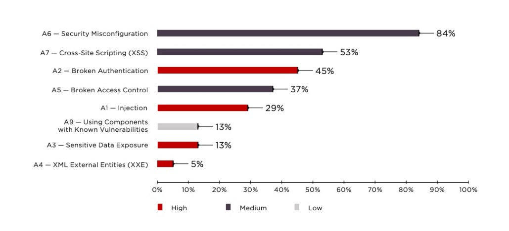
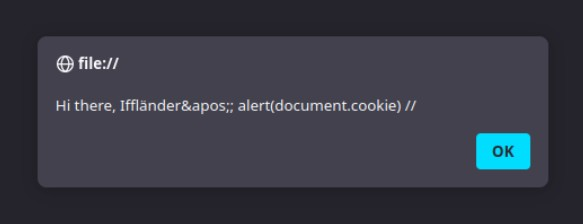
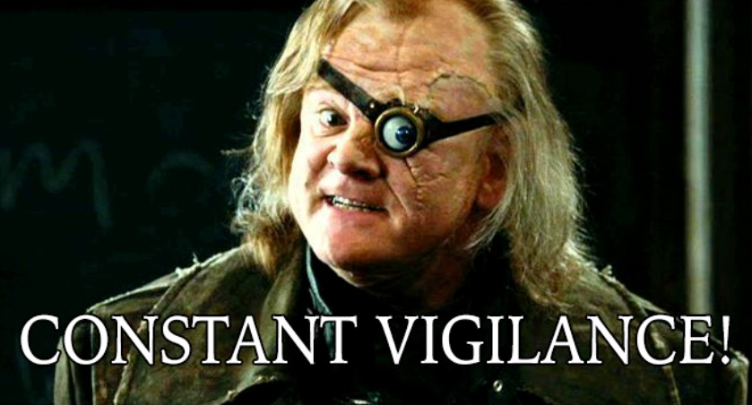

Cross-Site-Scripting

Prof. Dr. Lukas Iffländer
HTW Dresden
01.08.2026
Agenda
- 01XSS-Grundlagen
- 02Samy Worm
- 03Reflected und Stored XSS
- 04HTML-Kontexte
- 05Script-Kontexte
- 06Content Security Policy
Lernziele
Nach dieser Vorlesung können Sie:
- Die XSS-Typen Reflected und Stored unterscheiden
- Escape-Strategien für verschiedene HTML-Kontexte anwenden
- Content Security Policy (CSP) konfigurieren und einsetzen
- Erklären, warum kontextspezifisches Escaping notwendig ist
The Story of Samy Worm I
Anyone who viewed my profile who wasn’t already on my friends list would inadvertently add me as a friend. Without their permission.
I can propagate the program to their profile, can’t I. If someone views my profile and gets this program added to their profile, that means anyone who views THEIR profile also adds me as a friend and hero, and then anyone who hits THOSE people’s profiles add me as a friend and hero…
10/04, 12:34 pm: You have 73 friends. I decided to release my little popularity program. I’m going to be famous…among my friends.
1 hour later, 1:30 am: You have 73 friends and 1 friend request.
7 hours later, 8:35 am: You have 74 friends and 221 friend requests. Woah. I did not expect this much. I’m surprised it even worked.. 200 people have been infected in 8 hours. That means I’ll have 600 new friends added every day. Woah.
1 hour later, 9:30 am: You have 74 friends and 480 friend requests. Oh wait, it’s exponential, isn’t it. Oops.
1 hour later, 10:30 am: You have 518 friends and 561 friend requests. Oh no. I’m getting messages from people [upset] that I’m their friend when they didn’t add me. I’m also getting emails…
The Story of Samy Worm II
3 hours later, 1:30 pm: You have 2,503 friends and 6,373 friend requests. I’m canceling my account. This has gotten out of control. People are messaging me saying they’ve reported me for ”hacking” them due to my name being in their ”heroes” list. … Apparently people are getting [upset] because they delete me from their friends list, view someone else’s page or even their own and get re-infected immediately with me. I rule. I hope no one sues me.
5 hours later, 6:20 pm: I timidly go to my profile to view the friend requests. 2,503 friends. 917,084 friend requests.
I refresh three seconds later: 918,268. I refresh three seconds later. 919,664 (screenshot below). A few minutes later, I refresh. 1,005,831. It’s official. I’m popular. I have hit 1,000,000+ users. In less than 20 hours. Every request is from a unique, living, and logged in user. I refresh once more and now see nothing but a message that my profile is down for maintenance. I messed up, didn’t I.
1 hour later, 7:05 pm: A friend tells me that they can’t see their profile. Or anyone else’s profile. Or any bulletin boards. Or any groups. Or their friends requests. Or their friends. Nothing on myspace works. Messages are everywhere stating that myspace is down for maintenance and that the entire myspace crew is there working on it. I ponder whether I should drive over to their office and apologize.
2.5 hours later, 9:30 pm: I’m told that everything on myspace seems to be working again. My girlfriend’s profile, along with many, many others, still say „samy is my hero“, however the actual self-propagating program is gone.
Samy Worm
- Samy Kamkar, a 19-year-old hacker, created the Samy Worm in 2005.
- The worm was a self-propagating cross-site scripting (XSS) worm.
- It spread through the MySpace social network.
- The worm added Samy as a friend to the user’s profile.
- The worm also added the text „samy is my hero“ to the user’s profile.
- The worm spread to over one million users in less than 20 hours.
- The worm caused MySpace to go offline for several hours.
- Samy was charged with computer hacking and was sentenced to three years of probation.
- The worm was a proof of concept to show the dangers of XSS vulnerabilities.
Warum brauchen Angreifer XSS?
Die Same Origin Policy verhindert, dass unterschiedliche Quellen das DOM einer anderen Quelle manipulieren.
Folglich kann attacker.com folgendes nicht machen:
Der Angreifer braucht also eine andere Möglichkeit, JavaScript auf der Seite des Opfers auszuführen.
XSS - eine Code Injection Attacke
- Code Injection wird ausgelöst, wenn unvertrauenswürdige Nutzerdaten sich unerwartet als Code heraussstellen.
- Jeder Code, der einen Befehl mit Nutzerdaten kombiniert ist potenziell anfällig für Code Injection.
- Bei XSS ist der unerwartete Code JavaScript in einem HTML-Dokument
- Bei SQL Injection ist der unerwartete Code ein SQL-Befehl in einem Query-String
Was heißt das für uns?
- Im Erfolgsfall kann der Angreifer alles tun, was das Opfer in seinem Browser tun kann.
- insbesondere
- Cookies stehlen (JA! Alle Sessions!)
- HTTP-Anfragen mit den Cookies des Nutzers direkt aus dessen Browser schicken
Beispiel: Suchmaschine
Gutartige Suche
- User input: hey there
- URL: https://searchengine.com/search?q=hey+there
- encodeURIComponent(“hey there”) -> hey%20there
- Server input: hey there
- decodeURIComponent(“hey%20there”) → hey there
Zurückgegebene Seite
Beispiel: Suchmaschine
Bösartige Suche
- User input:
<script>alert(document.cookie)</script> - URL: https://searchengine.com/search?q=%3Cscript%3Ealert(document.cookie)%3C/script%3
- Server input: <script>alert(document.cookie)</script>
Zurückgegebene Seite
Der Browser interpretiert die Nutzereingabe als JavaScript.
Session Hijacking mit XSS
- Wenn eine Website anfällig für XSS ist, kann ein Angreifer JavaScript in die Seite einfügen und Cookies stehlen.
- kann ein Angreifer JavaScript in die Seite einfügen,
- an diesem Punkt einfach die Cookies des Nutzers stehlen.
- kann ein Angreifer JavaScript in die Seite einfügen,
Effekt
Der Request wird aus dem Browser des Opfers gesendet, inklusive Zugriff auf dessen Session-Kontext.
Reflektierte XSS-Angriffe
Zum Glück einfach zu verhindern
Never Trust the Client
- Jegliche Daten vom Client sind potenziell bösartig
- Clients können alles senden, was sie wollen
XSS immer noch eine der häufigsten Bedrohungen [1]

Warum hält sich XSS so gut?
- Daten können in mehreren verschiedenen Kontexten genutzt werden.
- Das Web hat viele verschieden Sprachen.
- Allein in HTML sind mindestens fünf verschiedene Kontexte, in denen Daten genutzt werden können.
- Jeder Kontext hat unterschiedliche Kontrollzeichen.
- Manche Kontexte haben sehr komplexe Regeln.
- Es ist schwer, alle Kontexte zu kennen und zu verstehen.
- Versagt die Security in einem Kontext, kann das ganze System gefährdet sein.
Reflektierte XSS vs. Persistente (stored) XSS
- In reflektierten XSS Angriffen wird der bösartige Code in der HTTP-Anfrage selbst übergeben.
- Angriffsziel: Eine URL finden, zu der man das Ziel locken kann und die den bösartigen Code enthält.
- Einschränkung: Schadcode muss in URL-Pfad oder Query-String übergeben werden.
- In persistenten (stored) XSS Angriffen wird der bösartige Code in der Datenbank des Servers gespeichert.
- Angriffsziel: Irgendein Mittel finden, um Schadcode in die Datenbank zu schreiben.
- Im Erfolgsfall inkludiert der Server den Schadcode in alle Seiten, die er ausliefert
HTML-Elemente
Grundversion
- Beispiel:
HTML-Elemente
Template
HTML Template
Nutzereingabe
Zurückgegebene Seite
HTML-Elemente
Gegenmaßnahme
- HTML template
- Wie fixt man das Problem?
- Alle < und > Zeichen in der Nutzereingabe durch < und > ersetzen.
- Alle & Zeichen in der Nutzereingabe durch & ersetzen.
- Vorsicht: script und style haben unterschiedliche Regeln!
HTML-Elemente
Sichere(re) Version
HTML Template
Nutzereingabe
Zurückgegebene Seite
HTML-Attribute
Template
HTML template
Nutzereingabe
Zurückgegebene Seite
HTML-Attribute
Gegenmaßnahme
HTML Template
- Wie fixt man das Problem?
- Alle ’ Zeichen in der Nutzereingabe durch ' ersetzen.
- Alle ” Zeichen in der Nutzereingabe durch " ersetzen.
- Alle & Zeichen in der Nutzereingabe durch & ersetzen.
HTML-Attribute
Sichere(re) Version
HTML Template
Nutzereingabe
Zurückgegebene Seite
Attribute ohne Anführungszeichen
Grundversion
Beispiel
Attribute ohne Anführungszeichen
Template
Beispiel
Nutzereingabe
Zurückgegebene Seite (trotz Escaping von ’ , ’’ und & Zeichen)
Attribute ohne Anführungszeichen
Gegenmaßnahme
HTML Template
- Wie fixt man das Problem?
- Attribute immer in Anführungszeichen setzen.
- Attribute ohne Anführungzeichen können durch zahlreiche Zeichen angegriffen werden. Darunter space, %, *, +, ,, -, /, <, =, >, ^ und |
HTML-Attribute mit besonderen Bedeutungen
- Für die meisten Attribute ist escaping ausreichend
- Besondere Vorsicht gilt bei src und href!
- e.g.
<script src='USER_DATA_HERE'></script>kann niemals sicher sein, auch wenn USER_DATA_HERE escaped wurde. - Besonders bei URLs vom Typ javascript: oder data: ist Vorsicht geboten.
- e.g.
data:-URL
- Ruft testweise mal die URL
data:text/html,<script>alert('hi')</script>auf. - Eine weitere interessante URL ist
data:text/html,<html contenteditable></html>
javascript:-URL
- Ruft testweise mal die URL
javascript:alert(document.cookie)auf. - Hier schützen uns unsere modernen Browser
- Chrome und Firefox entfernen den javascript:-Teil wenn man die URL in die Adresszeile kopiert.
- Safari verhindert das Ausführen von javascript:-URLs.
Wofür sind data: und javascript: URLs gut?
- Historische Lösung, um JavaScript als Reaktion auf einen Klick auszuführen:
- um HTTP-Anfragen in einer HTML-Seite zu speichern:
- um HTTP-Anfragen in einem CSS-Stylesheet zu speichern:
Beware, here be dragons!
- Wenn ein Nutzer eine URL wählen darf, kann JavaScript ausgeführt werden.
- Wenn ein Nutzer eine Seite wählen draf, die in einem iframe angezeigt werden soll, kann JavaScript ausgeführt werden.
- Wenn ein Nutzer ein Script wählen darf, kann (offensichtilch) JavaScript ausgeführt werden.
Die nächste Falle: on*-Attribute
HTML-Template
Nutzereingabe
Zurückgegebene Seite
- Nur
'und"zu escapen reicht hier nicht!
Noch ein False Friend
Code
- HTML template:
- Nutzereingabe: username
- Zurückgegebene Seite:
- Wie könnte dieses HTML ein Problem darstellen?
Noch ein False Friend
Ausnutzung
Script-Elemente
Ausgabe
Beispiel
Script-Elemente
Template
HTML Template
- Nutzereingabe:
Iffländer'; alert(document.cookie); //
Zurückgegebene Seite:
Script-Elemente
Gegenmaßnahme
HTML Template
- Wie fixt man das Problem?
- Alle ’ durch ' ersetzen
- Alle ” durch " ersetzen
Script-Elemente
Sichere(re) Version
HTML Template
- Nutzereingabe:
Iffländer'; alert(document.cookie); //
Zurückgegebene Seite:
Script-Elemente
Intelligenterer Angreifer
HTML Template
- Nutzereingabe:
Iffländer'; alert(document.cookie); //
Zurückgegebene Seite:
Script-Elemente
Schutz?
- Das Escape-Zeichen kann durch den Einsatz eines weiteren Escape-Zeichens entschärft werden.
- Ideen, das zu fixen:
- Alle ’ durch ' ersetzen
- Alle ” durch " ersetzen
- Alle durch \ ersetzen
- Immer noch kaputt …
Script-Elemente
Noch schlauerer Angreifer
- HTML template:
Nutzereingabe: User input:
</script><script>alert(document.cookie)</script><script>Zurückgegebene Seite:
Script-Elemente
Noch schlauerer Angreifer - Elemente im Detail
Parser, Parser, überall Parser
- Zuerst läuft der HTML-Parser
- Sucht gierig nach HTML Tags
- Produziert einen DOM Baum
- Dann laufen die CSS- und JavaScript-Parser
- Der JavaScript-Parser lauft auf den Inhalten von
<script>Tags - Der CSS-Parser läuft auf den Inhalten von
<style>Tags
- Der JavaScript-Parser lauft auf den Inhalten von
Script-Elemente
Gegenmaßnahme - Nächster Versuch
- Können wir nicht einfach HTML Tags in der Nutzereingabe escapen?
- Idee:
- Alle < durch < ersetzen
- Alle > durch > ersetzen
Script-Elemente
Sichere(re) Version - Nächster Versuch
HTML Template
Nutzereingabe: User input: Iffländer'; alert(document.cookie); //
Zurückgegebene Seite:
Script-Elemente
Besser aber hat Probleme
- Erhält den User-Input nicht

Script-Elemente
Und wie löst man das jetzt wirklich?
- Daten in Hexadezimal encodieren und einen String mit den Zeichen 0–9 und a–f erstellen.
- Dann die Daten in ein
<script>Element includieren. - In JavaScript wird der String dann decodiert.
Script-Elemente
Sichere Implementierung mit Template-Tag
- Eine andere Lösung:
- einen
<template>Tag verwenden, um Daten zu speichern, die nicht gerendert werden sollen - die Escaping-Regeln sind wie bei HTML Elementen (<, >, &)
- einen
Contexte, die nie sicher sind
Klang nach einer guten Idee
- HTML-Parser sind extrem tolerant und akzeptieren sehr viele „Fehler“.
- Hier ein paar Beispiele für „valides“ HTML:
Robustness Principle
- „Be conservative in what you send, be liberal in what you accept“
- Auch als Postel’s Law bekannt, der in der TCP-Spezifikation folgendes schrieb:
- „TCP implementations should follow a general principle of robustness: be conservative in what you do, be liberal in what you accept from others.“
- Aus Security-Sicht ist das eine schlechte Idee.
- „A flaw can become entrenched as a de facto standard. Any implementation of the protocol is required to replicate the aberrant behavior, or it is not interoperable. This is both a consequence of applying the robustness principle, and a product of a natural reluctance to avoid fatal error conditions. Ensuring interoperability in this environment is often referred to as aiming to be ’bug for bug compatible.“ – Martin Thomson
Wo kann ich escapete Nutzerdaten sicher verwenden?
- HTML-Element-Inhalte
- HTML-Attribute-Werte
- JavaScript Strings
Vorsicht: Nesting und Parser-Ketten
- Zu beachten: Es gibt drei Runden des Parsings!
- HTML Parser extrahiert das onclick Attribut und fügt es zum DOM hinzu.
- Wenn der Button geklickt wird, wird der JavaScript-Parser setTimeout() extrahieren und ausführen.
- Eine Sekunde später, wird der String, der als erstes Argument an setTimeout() übergeben wurde, geparsed und ausgeführt.
- Wenn die Nutzerdaten nicht doppelt enkodiert mit JavaScript-Backslash-Sequenzen und danach HTML-Encodiert sind, hat man ein Problem.
- Am besten solchen Code nicht schreiben
Noch ein Nesting Beispiel
- Escaping von
someValueist vergleichsweise einfach - Genauso einfach ist es, zu vergessen, dass man auch noch die setTimeout-Konstruktion escapen muss.
- Wer solchen Code schreibt, ist selbst schuld.
CSP – Grundidee
Problem
Browser führen jeden JavaScript-Code aus, der in einer Seite eingebettet ist – auch von Angreifern injizierten Code.
Lösung: Content Security Policy
Server definiert per HTTP-Header, welche Quellen für Scripts erlaubt sind.
Content-Security-Policy: script-src 'self' https://trusted.com
- Browser blockiert alle Scripts von nicht erlaubten Quellen
- Inline-Scripts werden standardmäßig blockiert
CSP-Direktiven
| Direktive | Kontrolliert |
|---|---|
script-src |
JavaScript-Quellen |
style-src |
CSS-Quellen |
img-src |
Bildquellen |
connect-src |
XHR/Fetch-Ziele |
frame-ancestors |
Wer darf die Seite einbetten? |
default-src |
Fallback für alle Direktiven |
form-action |
Erlaubte Form-Submit-Ziele |
Quellenwerte: 'self', 'none', URLs, 'unsafe-inline', 'unsafe-eval'
CSP-Beispiel
default-src 'self': standardmäßig nur eigene Ressourcenscript-src: Scripts nur von eigener Domain und CDNstyle-src: CSS von eigener Domain + Inline-Stylesimg-src *: Bilder von überallframe-ancestors 'none': Seite darf nicht eingebettet werden
CSP und Inline-Scripts
Problem
‘unsafe-inline’ erlaubt alle Inline-Scripts – auch injizierte!
Lösung 1: Nonces
Lösung 2: Hashes
Nur Scripts mit exakt diesem Hash werden ausgeführt.
Strict CSP (Google-Empfehlung)
'nonce-{RANDOM}': zufälliger Wert pro Request'strict-dynamic': Von vertrauenswürdigen Scripts geladene Scripts sind ebenfalls vertrauenswürdigobject-src 'none': keine Pluginsbase-uri 'none': verhindert Base-Tag-Injection
Tipp: Erst mit Content-Security-Policy-Report-Only testen!
CSP Best Practices
'unsafe-inline'vermeiden, weil es CSP gegen XSS wirkungslos macht'unsafe-eval'vermeiden, weil eseval()undnew Function()blockiert- Nonces für legitime Inline-Scripts verwenden
- Mit Report-Only-Modus beginnen
- Violations an einen Endpoint reporten lassen
- CSP Evaluator nutzen: https://csp-evaluator.withgoogle.com/
CSP-Grenzen
CSP ist kein Allheilmittel!
CSP ist eine zusätzliche Verteidigungsschicht, kein Ersatz für korrektes Escaping.
- CSP verhindert nicht alle XSS-Varianten:
- Stored XSS in erlaubten Scripts
- Dangling Markup Injection
- XSS über JSONP-Endpoints
- Legacy-Browser unterstützen CSP möglicherweise nicht
- Komplexe Websites haben oft viele Ausnahmen nötig
Defense in Depth: CSP und korrektes Escaping und HttpOnly-Cookies
Zusammenfassung
✓ XSS ist Code Injection in HTML und JavaScript
✓ Der Kontext bestimmt die Escape-Strategie
✓ User-Input niemals unescaped ausgeben
✓ CSP ist eine zusätzliche Verteidigungsschicht
Merksatz
“Context is King” - die richtige Escape-Funktion hängt vom Ausgabekontext ab.
Checkliste für sichere Webanwendungen:
- Kontextspezifisches Output-Encoding
- Content Security Policy implementieren
- HttpOnly- und Secure-Flags für Session-Cookies
- Regelmäßige Security-Audits

Literaturverzeichnis I
[1] Positive Technologies. “Web Applications vulnerabilities and threats: statistics for 2019”. In: Ptsecurity, Nov. 2020.
URL: https://www.ptsecurity.com/ww-en/analytics/web-vulnerabilities-2020.
Vielen Dank!
Prof. Dr. Lukas Iffländer
HTW Dresden
01.08.2026

01.08.2026 / Cross-Site-Scripting / HTW Dresden / Prof. Dr. Lukas Iffländer